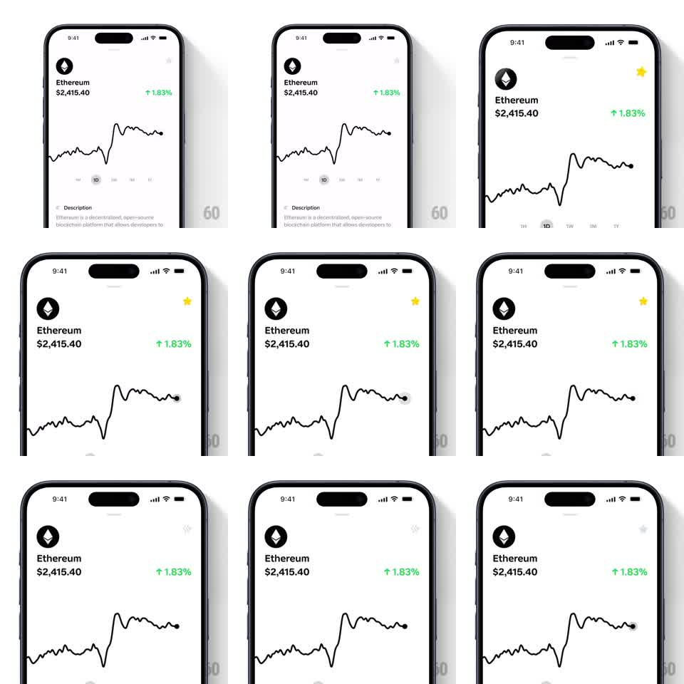

Media
Frame-by-frame

Rebuild this animation 1:1: Family's favorite star - toggling the star on a token detail screen spins it, springs it up in scale, and fills it yellow; toggling off reverses to a quiet outline.

Rebuild this animation 1:1: Family's favorite star - toggling the star on a token detail screen spins it, springs it up in scale, and fills it yellow; toggling off reverses to a quiet outline. ## Integration Integration: stack-agnostic spec - springs given as stiffness/damping, timed motions as duration + curve; map every value to your framework and animation library of choice. ## Scene Token detail screen (Ethereum): icon, name, price, green change badge, price chart, time range pills. A star icon sits top-right; it is the only animated element. ## Motion spec Pattern: tap toggle with playful spring morph. - Tap to favorite: star rotates ~180deg while scaling 1 -> 1.3 -> 1 (spring ~350/16, ~400ms), outline crossfades to yellow fill during the first half. - Small haptic tick on toggle. - Tap to unfavorite: fill drains to outline (150ms), star scales 1 -> 0.9 -> 1 with a half rotation (~250ms, ease-out). - Nothing else on screen moves. ## Calibration - Overshoot on the fill state sells the delight; the unfavorite is deliberately calmer. - Rotation and scale run together, not in sequence. ## Reduced motion Star swaps fill state with a 120ms fade, no rotation or scale. ## Don't miss - Star persists its state - yellow fill is the favorited resting state, not a transient. - Icon stays aligned in its tap target through the scale (transform-origin center).